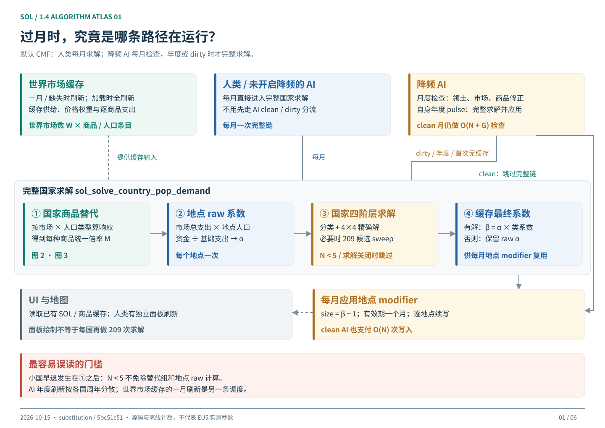
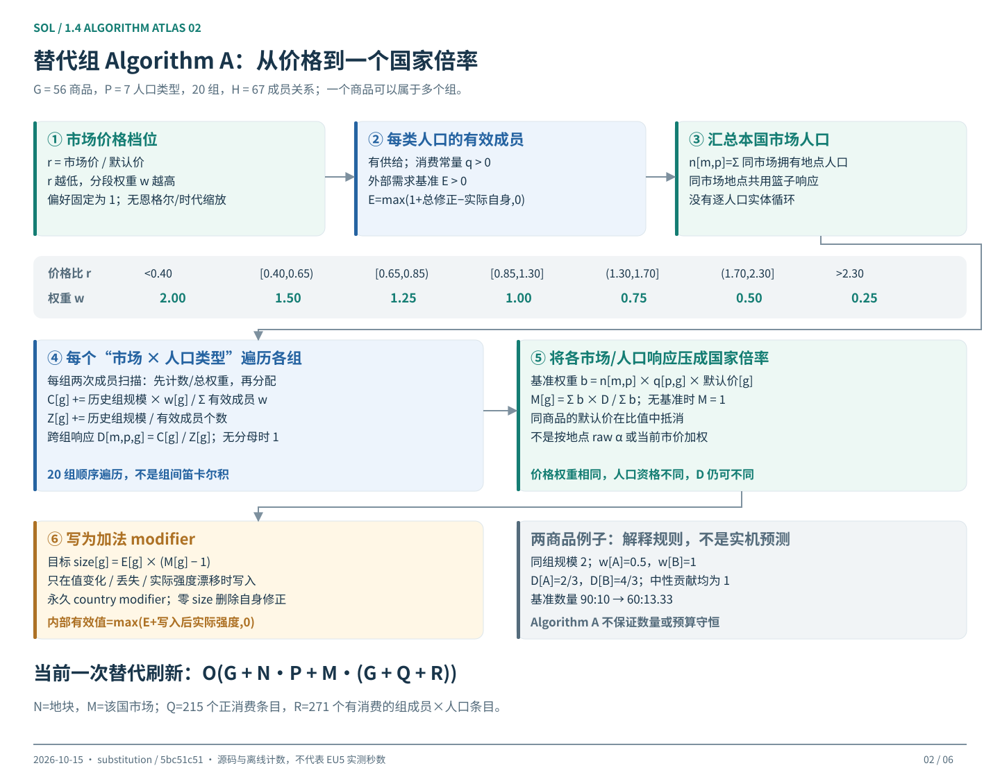
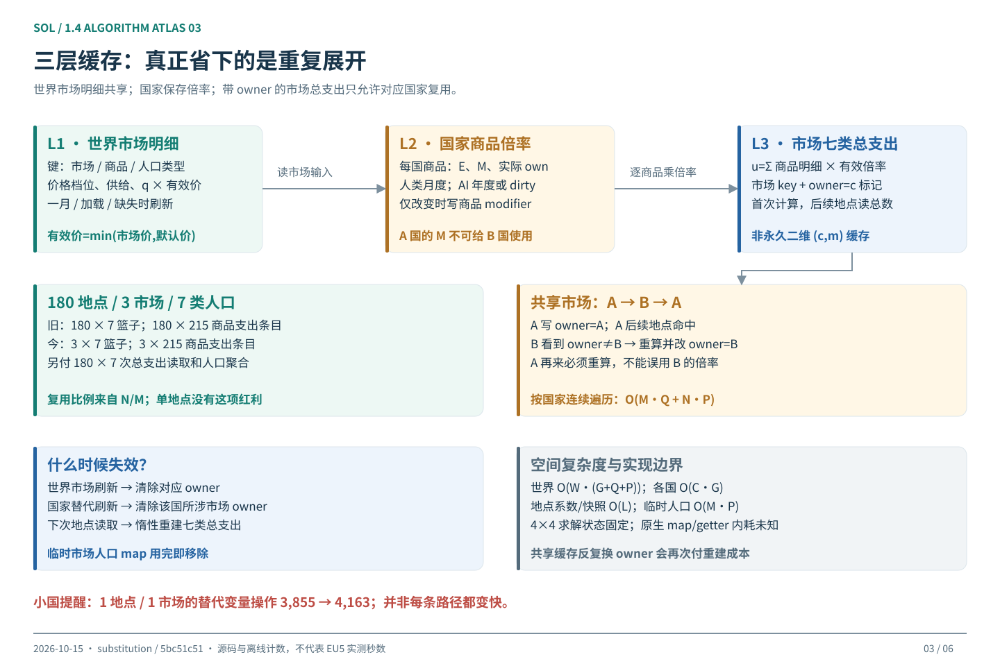
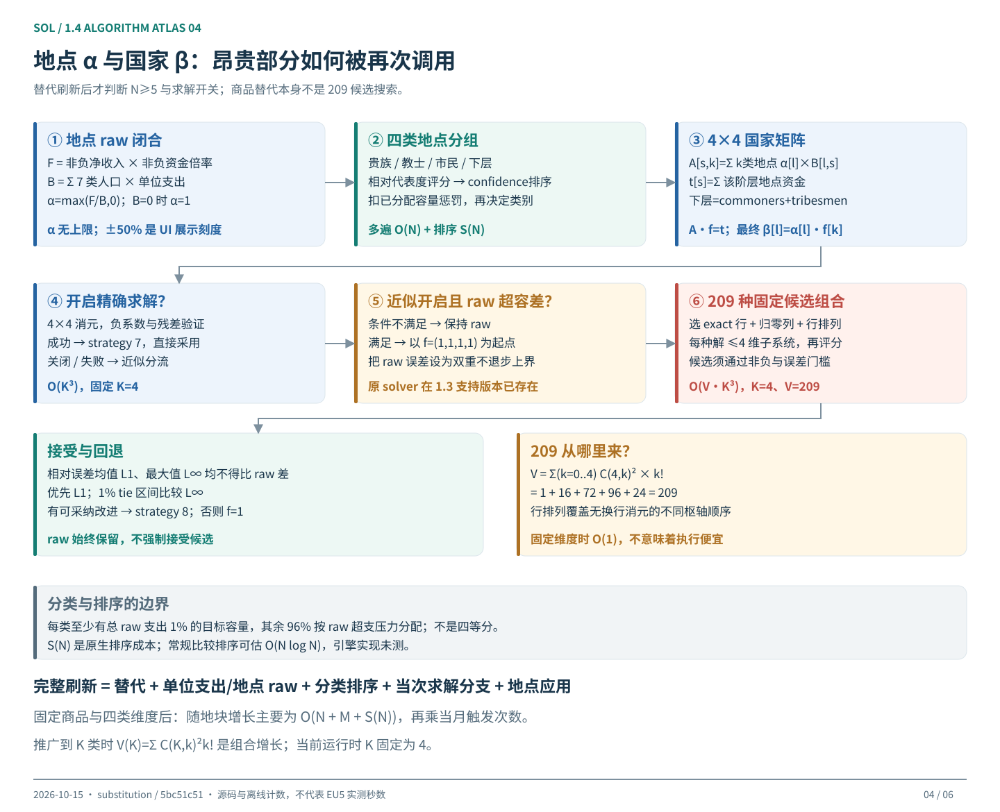
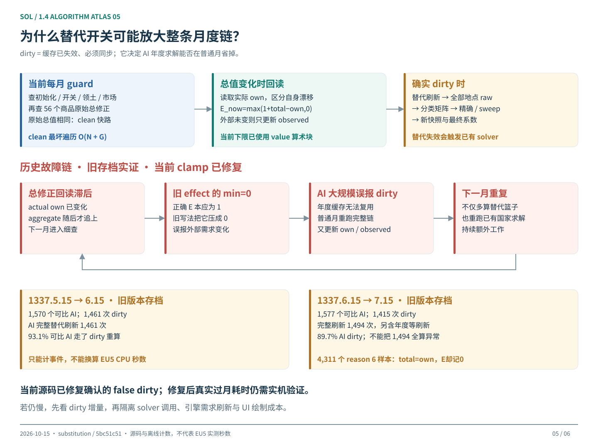
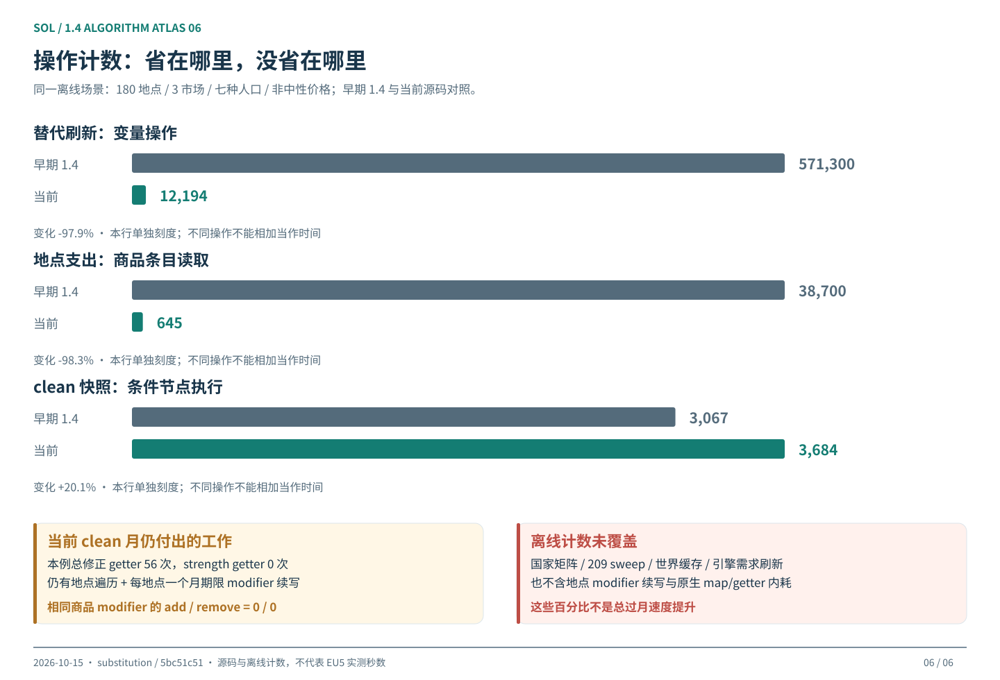

FIGURE 01
打开矢量图 ↗每月运行路径
先看谁会进入完整求解，再看里面做了什么。

FIGURE 02
打开矢量图 ↗替代 Algorithm A
从供给、价格和人口汇总得到国家倍率。

FIGURE 03
打开矢量图 ↗缓存与复用
同一市场的重复篮子已合并；地点遍历仍然存在。

FIGURE 04
打开矢量图 ↗地点与国家求解
209 候选属于原有的国家闭合求解器。

FIGURE 05
打开矢量图 ↗失效放大路径
旧版存档证据：调用次数可能比单次算法更重要。

FIGURE 06
打开矢量图 ↗实际离线计数
本次重跑脚本的结果，与引擎耗时严格区分。

INTERACTIVE · STRUCTURAL COUNTS
改变规模，观察工作量怎样增长
这是循环数量模型，不是跑分预测。所有参数都是可调示例；不会读取存档或修改游戏。
旧 / 当前：一国一次刷新的篮子份数N×7 → M×7（假设七类人口都有）
旧 / 当前：一国一次支出的商品条目读取N×215 → M×215；另有 N×7 总数读取
平均月份：进入完整刷新的国家数C/12 + d×11C/12（周年均匀、每国至多一次）
若这些国家都触发 sweep：候选组合上界示意刷新国数×209；N<5 时为0，不是实际求解次数
结构倍数不是秒数倍数。周年与 dirty 在实际引擎可能同月重复刷新，国家规模也不同。无论 d 是否为 0，月度 guard 和地点 modifier 都存在。篮子复用与年度降频，是两种不同的优化。
COMPLEXITY · PER COUNTRY / PER REFRESH
把复杂度写完整
| 阶段 | 脚本级工作量 | 何时支付 |
|---|---|---|
| 世界市场明细 | O(W·(G+Q)) | 一月 / 缺失 / 主动世界刷新 |
| 低频 AI guard | O(N+G) | 每月；dirty 后跳过后续有效检查 |
| 国家替代刷新 | O(G+N·P+M·(G+Q+R)) | 完整国家求解开头 |
| 单位支出与地点 raw | O(M·Q+N·P) | 完整刷新，按国家连续访问缓存 |
| 分类、矩阵 | O(N·K²)+S(N) | N≥5 且有 solver 开关开启 |
| 精确 / 近似 | O(K³) / O(V·K³) | 实际进入该分支的国家 |
| 地点 modifier | O(N) 次写入 | 每月；年度 solve 也即时应用 |
N=一国地点；M=其市场；W=世界市场；G=56；P=7；Q=215；R=271；K=4；V=209。S(N) 是原生排序成本，常规比较排序估计 O(N log N)。引擎人口需求、getter/map 原生实现成本不在表中。兼容子模组的 Q 会变。
月度总工作 ≈ 世界刷新 + Σ降频AI guard + Σ所有国家地点应用 + Σ本月每次完整求解 F(country) + UI / 引擎成本
此式 F 不含已单列的月度地点应用；年度、初始化、主动刷新可能额外应用地点 modifier。
EVIDENCE · SEPARATE BASELINES
版本与证据边界
- 游戏 1.3 支持基线：
f9bee41d的 metadata 为 1.3.11，已存在 209 候选和 AI 年度调度。仓库旧v1.3标签不是游戏版本 1.3 的同义词。 - 替代引入：
09ab11b1→dfd3055f加入替代组；前者的国家 solver 文件与当前相同。 - 计数图基线：
70561daf是早期 1.4，不能标为 1.3。旧name=modifier 字段仅在 fixture 规范化，以计旧设计的请求，不能证明曾成功应用。 - UI：主要读缓存；月度 situation 对所有国家轻过滤，人类刷新显示，一月/缺缓存才聚合面板。缺求解缓存时可以触发 solve；绘制本身还需单独计时。
- 不是实机计时：离线执行使用 Python float，未模拟完整引擎定点舍入、缓存时序或 C++ modifier 内耗。旧历史故障计数不是修复后测量。